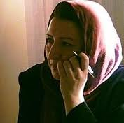

|
|
|
Browsing
Contact Us |
Campaigners |
Face to Face |
Tribune |
Interview |
News |
On the Web |
One Million |
Report
Farsi | Français | German | Italian | Spanish | العربية Also in this section
|
 Iran: Journalist, Poet and Activist Faranak Farid Arrested; Serious Health ConcernsWednesday 21 September 2011 View online : Pen International There are serious concerns for the welfare of journalist, poet and activist Faranak Farid, who was arrested on 3 September 2011 in Tabriz, north-west Iran, apparently for her peaceful activism and writings on environmental issues and women’s rights. According to our information, Faranak Farid, editor-in-chief of the banned monthly Dilmaj, poet and women’s rights activist, was arrested by plainclothes officers whilst out shopping in the city of Tabriz on 3 September 2011. Security forces later searched her house and seized her computer and personal documents. She was arrested following her participation in a peaceful protest against the environmental policies of the Iranian authorities affecting the Urmiah Lake in north-western Iran, and is also thought to be targeted for her writings and activism in defense of women’s rights. She is believed to be facing charges of ’insulting the Supreme Leader’, ’propaganda against the system’, and ’acting against national security’. Faranak Farid was reportedly severely beaten during her arrest and also ill-treated during the lengthy interrogation sessions which followed at the Tabriz police detention centre in the initial days of her detention. Requests for medical treatment have been denied and concerns for her welfare are mounting. English PEN are calling for Faranak Farid’s immediate and unconditional release in accordance with Article 19 of the International Covenant on Civil and Political Rights, to which Iran is a signatory. In the meantime, we are demanding that she be given all necessary medical treatment as a matter of urgency. Please send letters of appeal - guidelines and addresses follow. Faranak Farid is now being held in the women’s section of Tabriz Central Prison, where she is feared to be at risk of ill-treatment. Her sister was allowed to visit her there for 45 minutes on 12 September 2011 but an independent lawyer appointed to represent her has not yet had access to her. Background: Faranak Farid (pen-name Ipek), aged 50, is a leading writer, editor and women’s rights activist. Her publications include the poetry collection Yuxuda Ayilmaq, published in 2009, and Jiziq. She is a founding member of the One Million Signature Campaign and has participated in numerous conferences and seminars both inside and outside Iran. Amnesty International gives the following background information: Faranak Farid is member of One Million Signatures Campaign, also known as the Campaign for Equality. She is also a member of the Azerbaijani minority in Iran, a poet, a translator and editor of the women’s section of the banned monthly Dilmaj. In 2008 she was summoned to the Ministry of Intelligence for questioning regarding a conference on women in Turkey she was due to attend… The One Million Signatures Campaign, launched in 2006, is a grassroots initiative composed of a network of people committed to ending discrimination against women in Iranian law. The Campaign gives basic legal training to volunteers, who travel around the country promoting the Campaign. They talk with women in their homes, as well as in public places, telling them about their rights and the need for legal reform. The volunteers are also aiming to collect one million signatures of Iranian nationals for a petition demanding an end to legal discrimination against women in Iran. Dozens of the Campaign’s activists have been arrested or harassed for their activities for the Campaign, some while collecting signatures for the petition. Several are currently detained or serving prison terms for their activities on behalf of the Campaign. Iranian Azerbaijanis speak a Turkic language and are mainly Shi’a Muslims. As the largest minority in Iran, they make up 25-30 per cent of the population; they live mainly in the north and north-west of the country and in Tehran. Although generally well integrated into Iranian society, in recent years they have increasingly called for greater cultural and linguistic rights, including the right to education in Azerbaijani Turkic. Lake Oroumieh (also spelt Urmia, Urumieh, Oroumiye) is a salt lake in north-western Iran. The lake is situated between the Iranian provinces of East Azerbaijan and West Azerbaijan. It is the largest lake in the Middle East and the third largest salt water lake on Earth. More than 40 dams have been built over 13 rivers that feed the lake and the recent drought, which started in 1999, has significantly decreased the annual amount of water the lake receives. This in turn has increased the salinity of the water prompting fears of an ecological disaster in the region. At the beginning of April 2011 demonstrations took place in Tabriz, Oroumieh and reportedly other cities where Iranian Azerbaijanis live, calling on the Iranian authorities to remove dams on rivers feeding Lake Oroumieh due to the risk that the lake could dry up. Similar to protests in previous years, the protesters brought glasses of water and poured them into the rivers feeding the lake or the lake itself (click here for more details). Other largely peaceful rallies took place between 22 August and 8 September 2011; in response, the authorities carried out scores of arrests and the security forces are alleged to have used excessive force against protesters; unconfirmed reports suggest that several demonstrators may have been killed. TAKE ACTION Please write immediately:
|